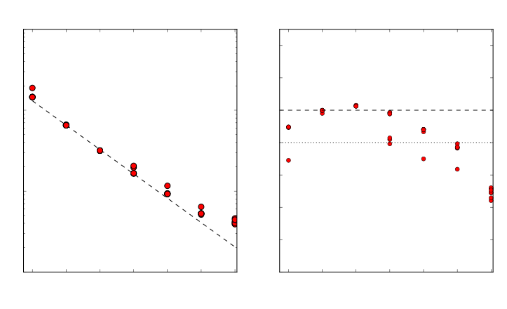

Pursuing Peak Performance in Pelagic Predictions
Marshall Ward
National Computational Infrastructure

Pursuing Peak Performance in Pelagic Predictions
MOM 5
Marshall Ward
National Computational Infrastructure
Relative performance is well-documented
What is Peak Performance?
$$R_\text{peak} = N_\text{CPU} \times \left( f \times N_\text{vec} \times N_\text{ins} \right)$$
- $N_\text{CPU}$ : Number of CPU cores
- $f$ : CPU frequency (cycles per second)
- $N_\text{vec}$ : FLOPs per instruction
- $N_\text{ins}$ : Instructions per cycle
Dennard scaling breakdown
- Power $\propto f$ (physics)
- Power $\propto$ area (Dennard)
- Lower area, raise $f$
- $P$ stays constant...
- ... until 2005 ($P \gg A$)
SIMD vectorization
- SSE
- 4 SP / 2 DP floats
- AVX, AVX2
- 8 SP / 4 DP floats
- AVX-512
- 16 SP / 8 DP floats
$N_\text{vec}$ = 4 DP on Raijin (AVX)
Sandy Bridge Concurrency

Concurrent Add, Multiply, Load, Stores ($N_\text{ins} = 2$)
Peak (SP) performance on Raijin
| Cores | GFLOP/sec/core | Add | Add/Mult |
|---|---|---|---|
| 1-2 | 26.4 | 26.03 | 52.11 |
| 3-4 | 25.6 | 25.24 | 50.56 |
| 5-6 | 24.8 | 24.41 | 48.96 |
| 7-8 | 24.0 | 23.66 | 47.49 |
- Subject to # of cores, AVX slowdown, and temperature
- Double precision is half (~12 GFLOP/sec)
MOM 5 AVX vectorization
| Subroutine | % AVX |
|---|---|
| MAIN | 88.1 |
| update_ocean_model | 91.0 |
| update_ocean_tracer | 92.9 |
| vert_mix_coeff | 80.9 |
| ocean_explicit_accel_a | 92.8 |
| update_ocean_barotropic | 94.5 |
MOM across platforms
Ocean core runtime, 960 cores, 10 day (480 steps)
| Platform | Runtime (s) | FLOP/sec/core |
|---|---|---|
| Sandy Bridge (no SIMD) | 179.2 | 1.05 |
| Sandy Bridge (AVX) | 164.3 | 1.14 |
| Broadwell (AVX) | 160.2 | 1.17 |
| Broadwell (AVX2) | 156.0 | 1.20 |
| Knights Landing (AVX) | 377.1 | 0.50 |
Test code block
Simple evaluation in biharmonic solver
do k=1,nk
do j=jsd,jed
do i=isd,ied
massqc(i,j,k) = 0.25 * Grd%dau(i,j) &
* Thickness%rho_dzu(i,j,k,tau)
enddo
enddo
enddo
"Roofline analysis" predicts peak (12 GFLOP/sec)
Vector update
| CPUs | Tile size | Runtime (ms) | GFLOPS/sec |
|---|---|---|---|
| 1 | 187.5 | 27.970 | 0.824 |
| 2 | 93.8 | 18.425 | 0.625 |
| 4 | 46.9 | 7.956 | 0.724 |
| 8 | 37.5 | 6.058 | 0.475 |
| 16 | 23.4 | 3.503 | 0.411 |
| 32 | 11.7 | 2.264 | 0.318 |
| 60 | 5.0 | 1.617 | 0.237 |
| 120 | 2.5 | 1.434 | 0.134 |
Unaligned assembly
..B2.418:
vmovupd (%r15,%r14,8), %xmm0
vmovupd (%r13,%r14,8), %xmm2
vmovupd 32(%r15,%r14,8), %xmm6
vmovupd 64(%r15,%r14,8), %xmm12
vmovupd 32(%rdi,%r14,8), %xmm8
vmovupd 64(%rdi,%r14,8), %xmm14
vinsertf128 $1, 16(%r15,%r14,8), %ymm0, %ymm1
vmulpd .L_2il0floatpacket.0(%rip), %ymm1, %ymm3
vinsertf128 $1, 16(%r13,%r14,8), %ymm2, %ymm4
vmulpd %ymm4, %ymm3, %ymm5
vmovupd 96(%r15,%r14,8), %xmm2
vmovupd 96(%rdi,%r14,8), %xmm4
vmovupd %ymm5, (%r11,%r14,8)
vinsertf128 $1, 48(%r15,%r14,8), %ymm6, %ymm7
vinsertf128 $1, 80(%r15,%r14,8), %ymm12, %ymm13
vinsertf128 $1, 112(%r15,%r14,8), %ymm2, %ymm3
vmulpd .L_2il0floatpacket.0(%rip), %ymm7, %ymm9
vmulpd .L_2il0floatpacket.0(%rip), %ymm13, %ymm15
vmulpd .L_2il0floatpacket.0(%rip), %ymm3, %ymm5
vinsertf128 $1, 48(%rdi,%r14,8), %ymm8, %ymm10
vinsertf128 $1, 80(%rdi,%r14,8), %ymm14, %ymm0
vinsertf128 $1, 112(%rdi,%r14,8), %ymm4, %ymm6
vmulpd %ymm10, %ymm9, %ymm11
vmulpd %ymm0, %ymm15, %ymm1
vmulpd %ymm6, %ymm5, %ymm7
vmovupd %ymm11, 32(%r9,%r14,8)
vmovupd %ymm1, 64(%r9,%r14,8)
vmovupd %ymm7, 96(%r9,%r14,8)
addq $16, %r14
cmpq %r10, %r14
jb ..B2.418
Contiguous block
Vectorised restructure
!dir$ vector aligned
do m=1,npts_c
massqc_c(m) = 0.25 * dau_c(m) * rho_dzu_c(m)
enddo
Unroll vectors and align to memory
"Perfect" assembly
..B2.461:
vmulpd 8(%r13,%r15,8), %ymm0, %ymm1
vmulpd 40(%r13,%r15,8), %ymm0, %ymm3
vmulpd 72(%r13,%r15,8), %ymm0, %ymm5
vmulpd 104(%r13,%r15,8), %ymm0, %ymm7
vmulpd 8(%r11,%r15,8), %ymm1, %ymm2
vmulpd 40(%r11,%r15,8), %ymm3, %ymm4
vmulpd 72(%r11,%r15,8), %ymm5, %ymm6
vmulpd 104(%r11,%r15,8), %ymm7, %ymm8
vmovupd %ymm2, 8(%r10,%r15,8)
vmovupd %ymm4, 40(%r10,%r15,8)
vmovupd %ymm6, 72(%r10,%r15,8)
vmovupd %ymm8, 104(%r10,%r15,8)
addq $16, %r15
cmpq %r9, %r15
jb ..B2.461
Faster, but still far from peak...
| CPUs | Nested (ms) | Contig. (ms) | GFLOPS/sec |
|---|---|---|---|
| 1 | 27.161 | 19.775 | 1.17 |
| 2 | 17.544 | 10.390 | 1.11 |
| 4 | 7.515 | 5.598 | 1.03 |
| 8 | 5.944 | 3.888 | 0.74 |
| 16 | 3.158 | 1.770 | 0.81 |
| 32 | 1.957 | 1.059 | 0.68 |
| 60 | 1.206 | 0.330 | 1.16 |
| 120 | 1.112 | 0.230 | 0.83 |
Summary
- No substantial benefit from upcoming hardware
- MOM 5 is well-vectorized, but...
- MOM performance is far below peak
- Small tiles break pipelines
- Even "peak" code can run below peak
The path forward is not clear
New strategies, frameworks, or lower-level languages will be needed to achieve peak performance in the future